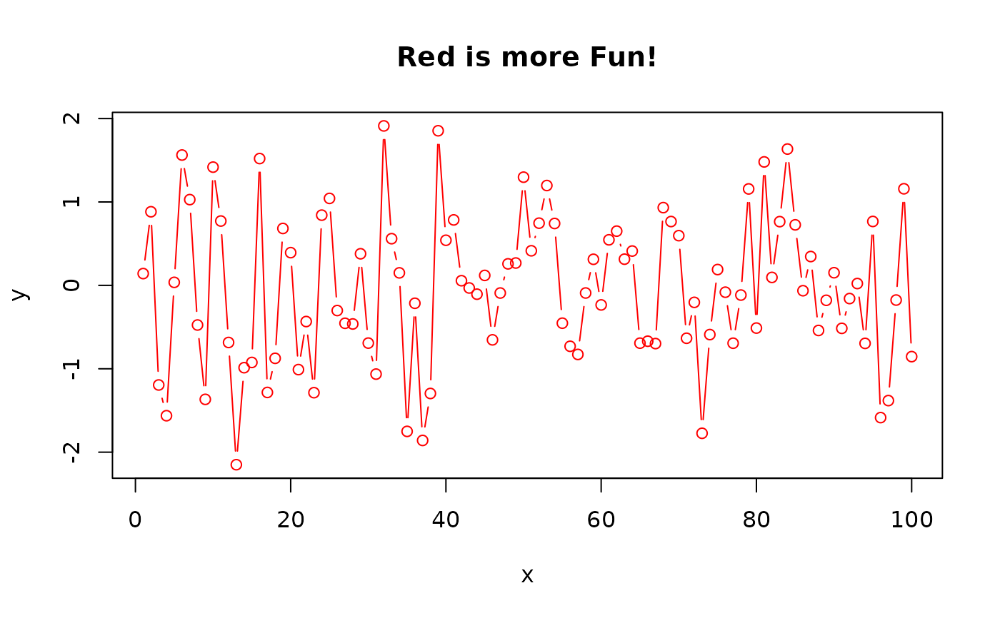
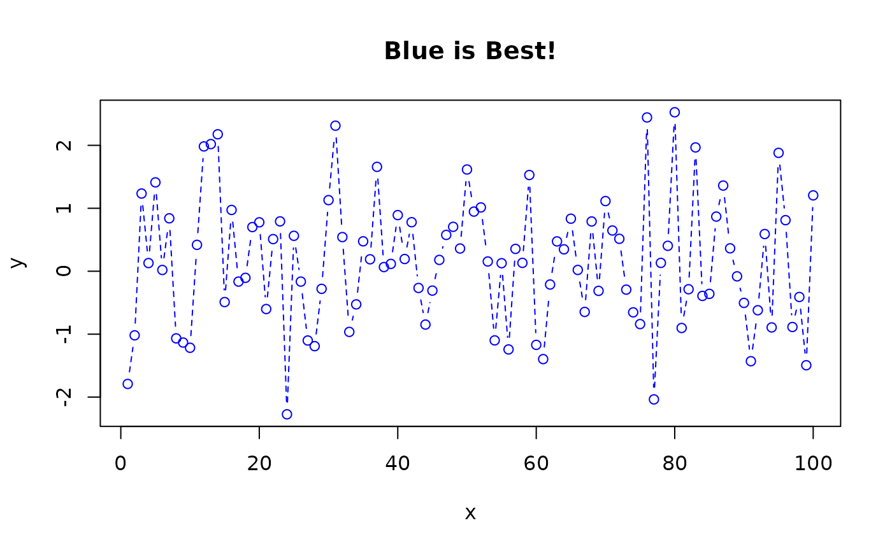
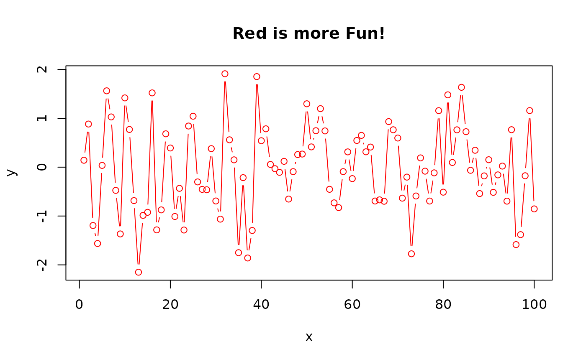
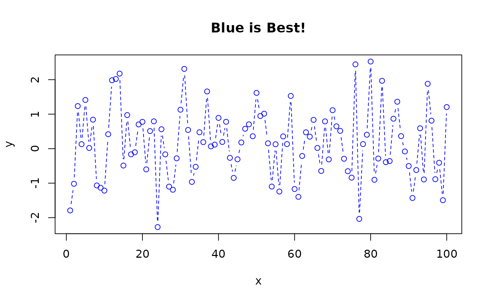

defmacro define a macro that uses R expression replacement
defmacro(..., expr)
strmacro(..., expr, strexpr)Arguments
- ...
macro argument list
- expr
R expression defining the macro body
- strexpr
character string defining the macro body
Value
A macro function.
Details
strmacro define a macro that uses string replacement
defmacro and strmacro create a macro from the expression given
in expr, with formal arguments given by the other elements of the
argument list.
A macro is similar to a function definition except for handling of formal
arguments. In a function, formal arguments are simply variables that
contains the result of evaluating the expressions provided to the function
call. In contrast, macros actually modify the macro body by
replacing each formal argument by the expression (defmacro) or
string (strmacro) provided to the macro call.
For defmacro, the special argument name DOTS will be replaced
by ... in the formal argument list of the macro so that ... in
the body of the expression can be used to obtain any additional arguments
passed to the macro. For strmacro you can mimic this behavior
providing a DOTS="" argument. This is illustrated by the last
example below.
Macros are often useful for creating new functions during code execution.
Note
Note that because [the defmacro code] works on the parsed expression,
not on a text string, defmacro avoids some of the problems of traditional
string substitution macros such as strmacro and the C preprocessor
macros. For example, in
mul <- defmacro(a, b, expr={a*b}) a
C programmer might expect mul(i, j + k) to expand (incorrectly) to
i*j + k. In fact it expands correctly, to the equivalent of
i*(j + k).
For a discussion of the differences between functions and macros, please Thomas Lumley's R-News article (reference below).
References
This code was taken from the gtools package on 20 June 2022 on account of a package orphaning problem. Note that gtools is licensed under GPL-2.
The original version of the defmacro actually originated from:
Lumley T. "Programmer's Niche: Macros in R", R News, 2001, Vol 1, No. 3, pp 11--13, https://cran.r-project.org/doc/Rnews/
Examples
####
# macro for replacing a specified missing value indicator with NA
# within a dataframe
###
setNA <- defmacro(df, var, values,
expr = {
df$var[df$var %in% values] <- NA
}
)
# create example data using 999 as a missing value indicator
d <- data.frame(
Grp = c("Trt", "Ctl", "Ctl", "Trt", "Ctl", "Ctl", "Trt", "Ctl", "Trt", "Ctl"),
V1 = c(1, 2, 3, 4, 5, 6, 999, 8, 9, 10),
V2 = c(1, 1, 1, 1, 1, 2, 999, 2, 999, 999),
stringsAsFactors = TRUE
)
d
#> Grp V1 V2
#> 1 Trt 1 1
#> 2 Ctl 2 1
#> 3 Ctl 3 1
#> 4 Trt 4 1
#> 5 Ctl 5 1
#> 6 Ctl 6 2
#> 7 Trt 999 999
#> 8 Ctl 8 2
#> 9 Trt 9 999
#> 10 Ctl 10 999
# Try it out
setNA(d, V1, 999)
setNA(d, V2, 999)
d
#> Grp V1 V2
#> 1 Trt 1 1
#> 2 Ctl 2 1
#> 3 Ctl 3 1
#> 4 Trt 4 1
#> 5 Ctl 5 1
#> 6 Ctl 6 2
#> 7 Trt NA NA
#> 8 Ctl 8 2
#> 9 Trt 9 NA
#> 10 Ctl 10 NA
###
# Expression macro
###
plot.d <- defmacro(df, var, DOTS,
col = "red", title = "", expr =
plot(df$var ~ df$Grp, type = "b", col = col, main = title, ...)
)
plot.d(d, V1)
 plot.d(d, V1, col = "blue")
plot.d(d, V1, lwd = 4) # use optional 'DOTS' argument
###
# String macro (note the quoted text in the calls below)
#
# This style of macro can be useful when you are reading
# function arguments from a text file
###
plot.s <- strmacro(DF, VAR,
COL = "'red'", TITLE = "''", DOTS = "", expr =
plot(DF$VAR ~ DF$Grp, type = "b", col = COL, main = TITLE, DOTS)
)
plot.s("d", "V1")
plot.d(d, V1, col = "blue")
plot.d(d, V1, lwd = 4) # use optional 'DOTS' argument
###
# String macro (note the quoted text in the calls below)
#
# This style of macro can be useful when you are reading
# function arguments from a text file
###
plot.s <- strmacro(DF, VAR,
COL = "'red'", TITLE = "''", DOTS = "", expr =
plot(DF$VAR ~ DF$Grp, type = "b", col = COL, main = TITLE, DOTS)
)
plot.s("d", "V1")
 plot.s(DF = "d", VAR = "V1", COL = '"blue"')
plot.s(DF = "d", VAR = "V1", COL = '"blue"')
 plot.s("d", "V1", DOTS = "lwd=4") # use optional 'DOTS' argument
plot.s("d", "V1", DOTS = "lwd=4") # use optional 'DOTS' argument
 #######
# Create a macro that defines new functions
######
plot.sf <- defmacro(
type = "b", col = "black",
title = deparse(substitute(x)), DOTS, expr =
function(x, y) plot(x, y, type = type, col = col, main = title, ...)
)
plot.red <- plot.sf(col = "red", title = "Red is more Fun!")
plot.blue <- plot.sf(col = "blue", title = "Blue is Best!", lty = 2)
plot.red(1:100, rnorm(100))

plot.blue(1:100, rnorm(100))

#######
# Create a macro that defines new functions
######
plot.sf <- defmacro(
type = "b", col = "black",
title = deparse(substitute(x)), DOTS, expr =
function(x, y) plot(x, y, type = type, col = col, main = title, ...)
)
plot.red <- plot.sf(col = "red", title = "Red is more Fun!")
plot.blue <- plot.sf(col = "blue", title = "Blue is Best!", lty = 2)
plot.red(1:100, rnorm(100))

plot.blue(1:100, rnorm(100))
